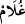

Hâfız şöyle der:
Yûsuf ’un ömrü artıran o güzelliğinden bildim ki,
Aşk Züleyhâ’yı mâsûmiyet perdesinden dışarı çıkarır.
Câmî de şöyle der:
Aşk, selâmet köşesi bucağı aramaz
Hoştur o rüsvâlık, aynı şekilde kınama
Onlar kınayarak aşkın gamını tazelerler
Bu kavgayı yüksek sesle ederler
Kâşifî ise şöyle der: Kadınlar, Mısır/Kahire şehrinde Ayn Şems denilen yerde
beraber oturup konuştular. Sözlerinin muhtevâsı şuydu:
“Azizin karısı, uşağının nefsinden murâd almak istiyormuş!” Bu uğurda her türlü
yola başvurup tuzaklar hazırlayarak uşağının kendisiyle ilişkide bulunmasını arzulamış!
Aziz kelimesi, Arapça’da hükümdar demektir. Buradaki “Aziz”den maksad, Reyyân’ın
bakanı Kıtfîr’dir. “Karısı” ifadesiyle kastedilen de Züleyhâ’dır. İnsanların sultan, vezir
ve benzeri kişilerle bunların yakınlarından bahsederken âdet edindikleri gibi, kadınlar
onun ismini açıkça söylememişlerdir.
Müfti Sa‘dî de şöyle der: Kadınların, Züleyhâ’yı “Azizin karısı” diyerek vezire
nisbet ederek anmaları, olayın çirkinliğini mübâlağa ile göstermek içindir. Çünkü
nefisler, önemli kişilerle ilgili haber ve mâcerâları duymaya daha çok düşkündür.
Ayetteki “≈__WORD__ (uşak)” kelimesi aslında genç demektir. Ama istiâre yoluyla kölelere de
“≈__WORD__
” denilir. Tıpkı çocuk anlamında olan “≈__WORD__ (hizmetçi)” kelimesinde olduğu gibi
bunlar da ne kadar yaşlanırlarsa yaşlansınlar yine de “fetâ” denilir. Âyette kastedilen
mânâ da budur.
Bir hadiste şöyle buyrulmuştur:
“Hiç kimse (eli altındakilere) ‘kölem, câriyem’ demesin! Çünkü hepiniz Allah’ın
kölelerisiniz. Bütün kadınlarınız da Allah’ın kullarıdır. O zaman herkes, ‘yavrum,
kızım, delikanlı!’ desin.”[31]
İbnü’l-Melek der ki: “Hz. Peygamber bir efendinin ‘kölem’ demesini kerih görüyor.
Çünkü bu hitap tarzında kendini büyük görme vardır. Ayrıca o köle hakîkatte Allah’a
âiddir.”
Efendinin böyle hitap etmesinin sadece köleyi incitip onurunu kıracak tarzda
kullanılması durumunda mekrûh olacağı da söylenmiştir. Aksi halde Kur’an’da şöyle
buyrulmazdı: “…köle ve câriyelerinizden sâlih olanları...’ (en-Nur, 24/32)
“Sevdâ onun kalbine işlemiş!” Doğrusu dostluk cihetinden muhabbet Züleyhâ’nın
gönlünün zarfını yarmıştır, yâni Yûsuf’un muhabbeti Züleyhâ’nın gönlüne girmiştir.
Bu ifade Züleyhâ’nın bedeni ile ilgili durumları gibi kalbiyle ilgili durumlarının da